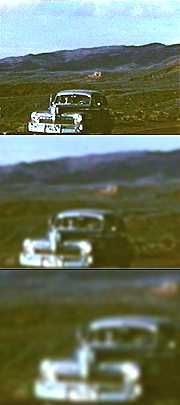

|
 |
Travis
had his first taste of speed during his second attempt to run away from home.
He was picked up by a young couple, Michael and Lindy, who were Seventh Day Adventists. Lindy tended to her new-born child in the back seat while Travis sat with Michael, popping handfuls of ephedrine washed down with coke to "stir the beans." Travis took the ride all the way to Katherine, and stepped down into the desert's pre-dawn, choking on the dust from a passing road-train... ...his head in a swarm of bees. |